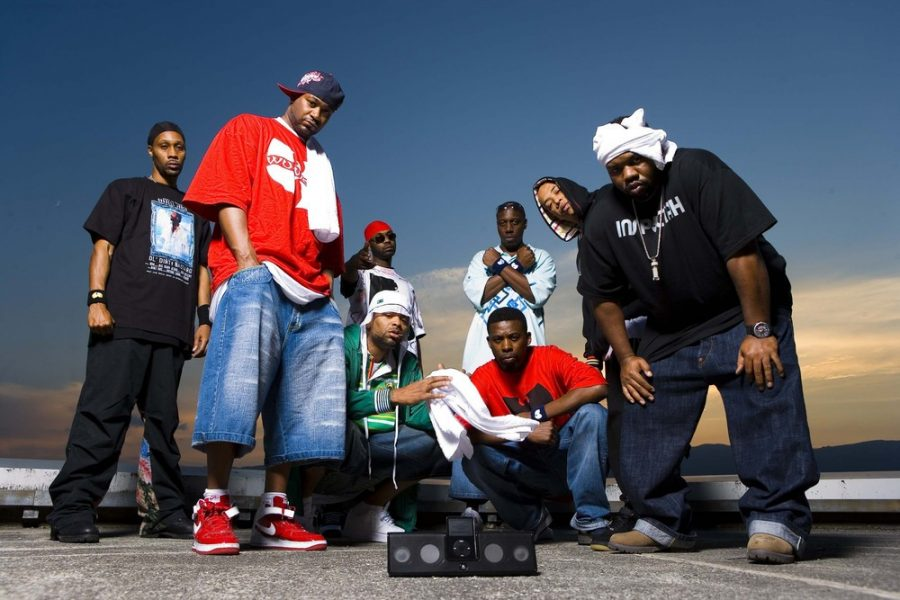
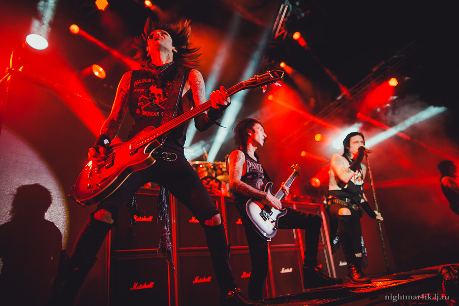
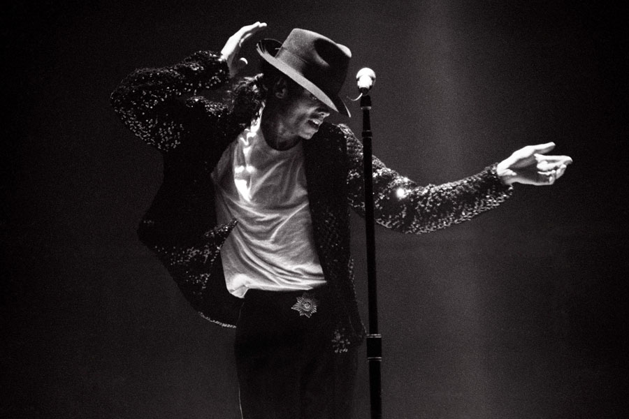

Classic
Бах - Шутка
Бетховен - К Элизе
Антонио Вивальди - Зима
Rap
10AGE - Пушка
Shiza - Uade
Скриптонит - Космос
Rock
Кипелов - Я свободен
Алиса - Торреро
Кароль и Шут - Кукла колдуна
Pop
Нигатив - Мне всё равно
NЮ - В сердце
Мы - Полярная звезда
Класси́ческая музыка — образцовые музыкальные произведения, золотой фонд мировой музыкальной культуры. Классические музыкальные произведения сочетают глубину, содержательность, идейную значительность с совершенством формы.
Рэп или Исполнение рэпа, также известное как рифмование, фристайл, эмсиинг или MC’инг — музыкальная форма вокальной подачи, включающая в себя «рифму, ритмичную речь и уличный жаргон», которая исполняется или произносится нараспев различными способами, как правило, под фоновый бит или музыкальный аккомпанемент.
Рок — обобщающее название ряда направлений популярной музыки. Слово rockвозникло как сокращение от названия рок-н-ролла, хронологически первого жанра рок-музыки, и обозначает характерные для рок-н-ролла ритмические ощущения, связанные с определённой формой движения, по аналогии с roll, twist, swing, shake.
Поп-му́зыка — область массовой культуры, охватывающая различные формы, жанры и стили развлекательной и прикладной музыки 2-й половины XX — начала XXI веков. Вид массовой культуры. Основные черты поп-музыки — простота инструментальной части, ритмичность, акцент на вокал.
Бах - Шутка
Бетховен - К Элизе
Антонио Вивальди - Зима
10AGE - Пушка
Shiza - Uade
Скриптонит - Космос
Кипелов - Я свободен
Алиса - Торреро
Кароль и Шут - Кукла колдуна
Нигатив - Мне всё равно
NЮ - В сердце
Мы - Полярная звезда